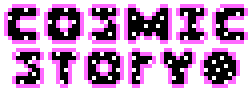

What's up?
The skies. The skies are pretty up there. All across them.
I want to start with a progress update for Episode 1. It is now in polishing stages. It's a short episode relative to some others in this game, but it's shaping up to be a fun one. I expect that a proper episode trailer will be put together soon. This means there will be a release date very soon.
You may be concerned about Episode 1's shorter length, but fear not. Episode 2 is going to be much longer and test a lot of characters in some ways, so this is more of a small calm before a small storm. Regardless, the opening episodes will all be practically self contained. Outside of the missions Axel goes on, the main story takes a bit to really come together. Half of the game is set up, but it's constant. Unlike Savior, where most of it started half way.
Currently, the episode is undergoing testing. It's feature complete and should have a release date soon. It's going to be far out so I can have a small break, then a head start working on Episode 2.
I want to mention a couple things about Cosmic Story, most of them being differentces from Savior. Cosmic Story uses the same engine as an old version of Savior. However, a lot was changed under the hood, and now, it's more accurate to say that Cosmic Story is a sister to Savior with it's mechanics, as they expand on Savior's. For example, combat is basically completely different. Worlds are done much more differently. The game flows differently.
My intent is to do something cool every episode.
Anyway, I just wanted to provided a small update since it's now been a week since Cosmic Story's reveal. A free Demo Steam Page will be up soon. That will be the only way to play Episode 1, and eventually Episode 2, when they release. My next article will be when that is up, which will likely come with a release date for Episode 1.
The trailer for Episode 1 will be releasing in October. From there, it's still a little until the episode releases. It feels like I'm releasing eight games, so I'll need a small bit of time before working on Episode 2, when Episode 1 is revealed fully.